Tubular are made of the following equipment :
-
Drill Pipe
These are heavy seamless tubing used to rotate the bit and circulated the drilling fluid. Joints of pipe approximately 30 feet long are coupled together by means of tool joints.
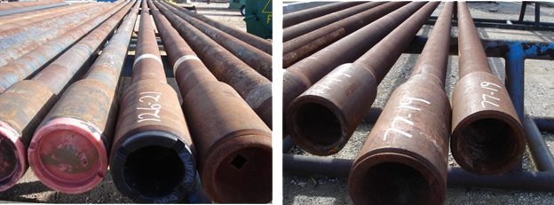
Basic Parts of a Drill Pipe
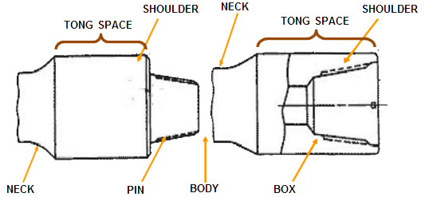
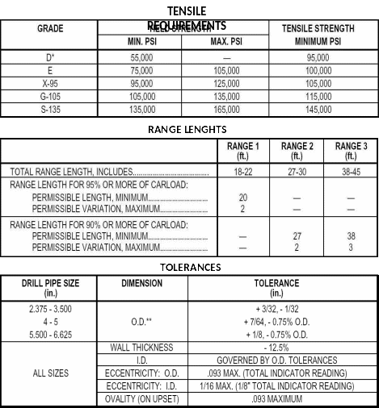
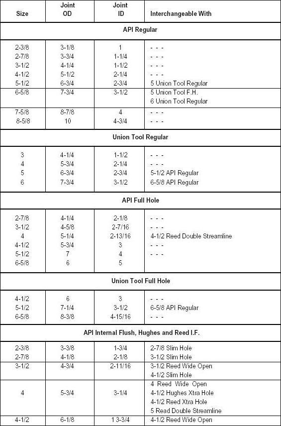
-
Heavy Weight Drill Pipe
Similar in appearance to a drill pipe, HWDP has the following different dimensional characteristics ; the tube wall is heavier about 1”thick in most sizes, the tool joints are longer, and the tube section has a larger diameter at mid length to protect the pipe from wear.
HWDP were developed for the following reasons ; as a transition member to be run between drill collars and drill pipe, as a flexible weight member to run on directional drilling, as a weight member on small rigs, drilling small diameter holes.
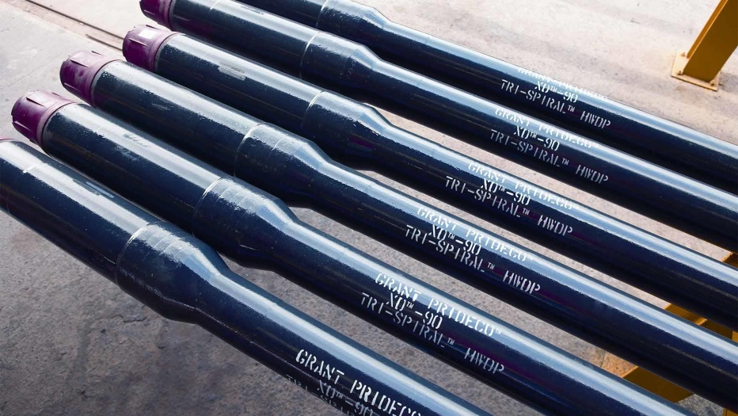
-
Drill Collar
The heavy, thick-walled tube steel, used between the drill pipe and the bit in the drill stem to provide pendulum effect to the drill stem and to provide weight on bit.
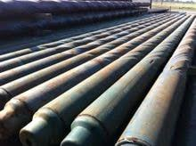
-
Kelly
The heavy steel member, usually four or six-sided that is suspended from the Swivel through the Rotary Table and connected to the topmost joint of drill pipe to turn the drill stem as the rotary table turns.
It has a bored passageway that permits fluid to be circulated into the drill stem and up the annulus or vise versa.

-
Subs
A short, threaded piece of pipe used to adapt parts of the drilling string that cannot otherwise be screwed together because of difference in thread size or design. These consist of :
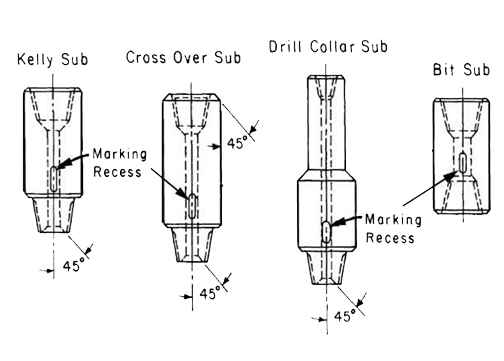
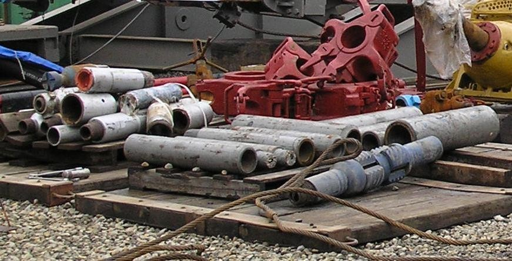
-
Bit Sub
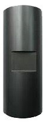
-
Crossover Sub
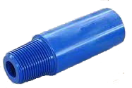
-
Kelly Saver Sub
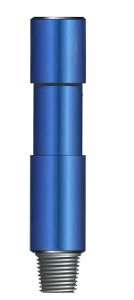
-
Lifting Sub
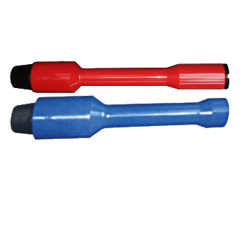
-
Bent Sub
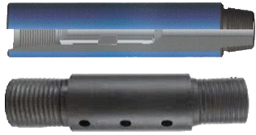
Tubular Handling Equipment
Equipment used to move, make and break connection, suspend tubular on the rig. These include the following :
-
Elevator Links
Equipment attached onto the Traveling Block in order to suspend the Elevators.
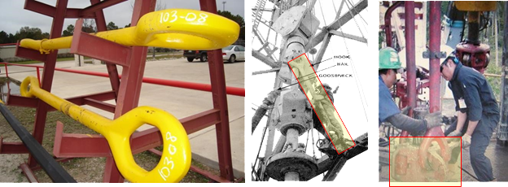
-
Elevator
Clamps that grip a stand of casing, tubing, drill pipe or drill collars so that the stand or joint can be raised from or lowered into the hole opening of the rotary table.
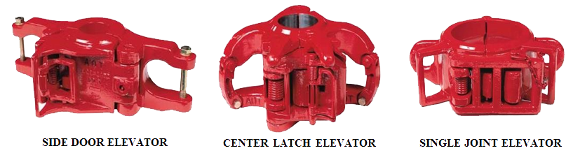
-
Lifting Subs
A short drill string component that is temporarily connected to the top of a tool assembly that is to be lifted vertically, such as when running or retrieving a tool string.
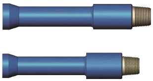
-
Lifting Plug
Lifting Plugs are tubular accessories used on flush and semi flush integral connections. They are a pin threaded steel plug provided with holes in the upper flange. The upper flange being of such a design as to allow the face of a side door elevator to abut the flange with enough overlap to allow the pipe or string to be lifted. Lifting Plugs :
- Are designed to withstand the weight of the whole tubular string.
- The maximum load capacity must be stamped on the flange. If no rating is stamped or is
illegible, it should be used to lift no more than 1 joint.
- The maximum lift capacity stamped on the plug should never be exceeded.
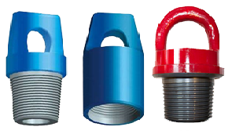
-
Tugger / Winch
A pneumatically operated drum with wire rope spooled onto it to move or lift heavy objects on the rig floor.
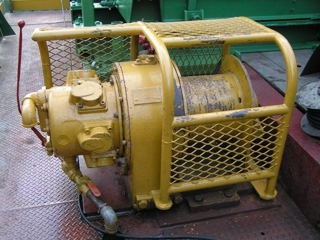
-
Slips
A wedge shape piece of metal with teeth or other gripping elements that are used to prevent pipe from slipping down into hole or to hold the pipe in place.
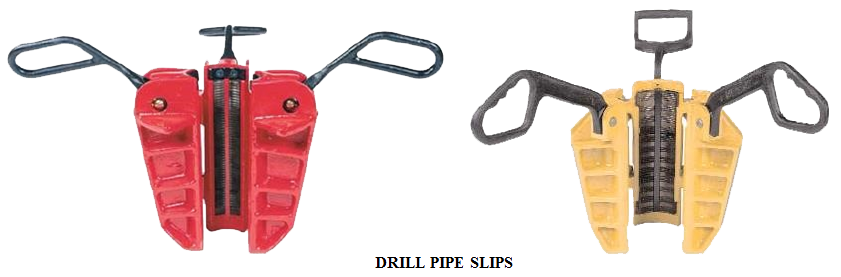
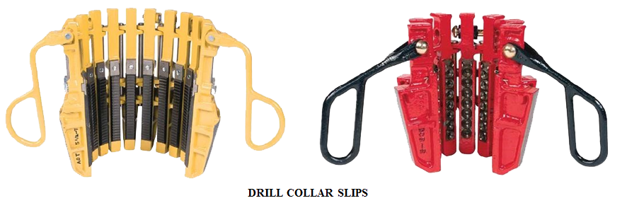
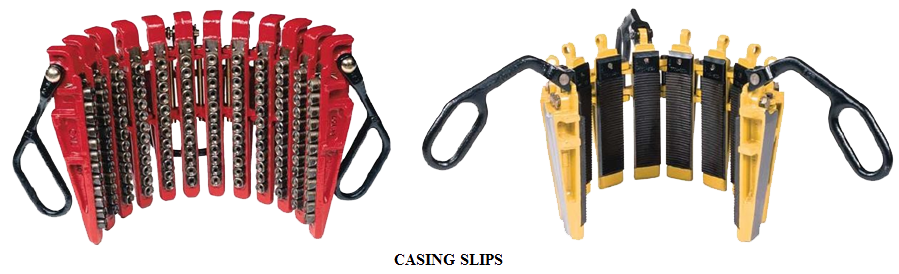
-
Safety Clamp
Used on tubular above the slips to prevent dropping the string should the slips fail to hold.
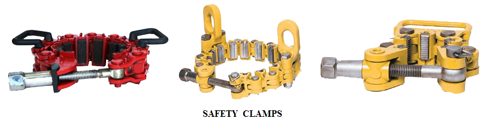
-
Tongs
Large wrenches used to make or break out tubular.
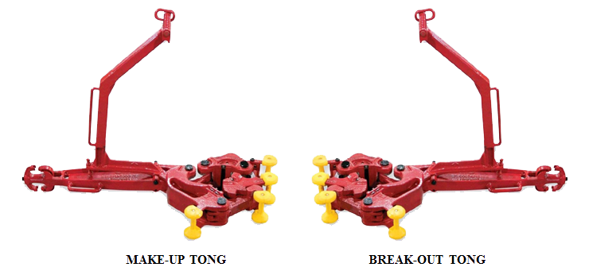
-
Kelly Spinner
A pneumatically operated device mounted on top of the Kelly that when actuated causes the Kelly to spin.
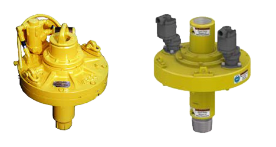
-
Drill pipe Spinner
A pneumatically operated device usually suspended on the rig floor used to make fast connections and spin off of drill pipes.
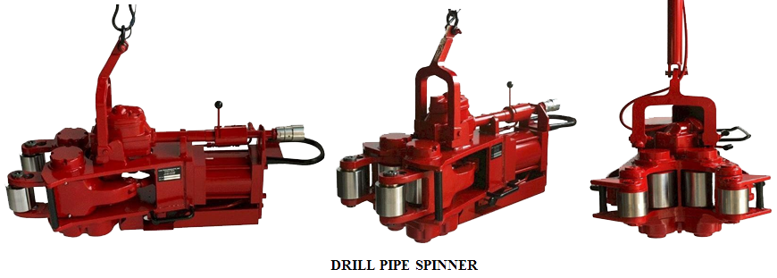
-
Iron Roughneck
A pneumatically operating machine that replaces the functions performed by the Kelly Spinner, Drill Pipe Spinner and Tongs.
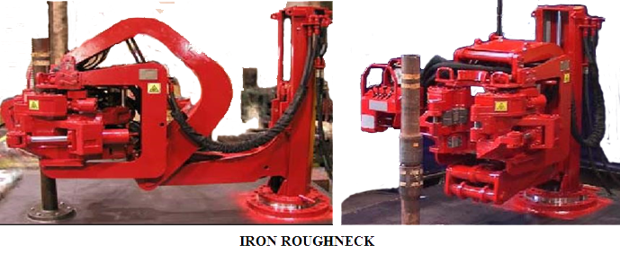
-
Bit Breaker
A device placed on top of the rotary table to enable the bit to be made up to drill string.
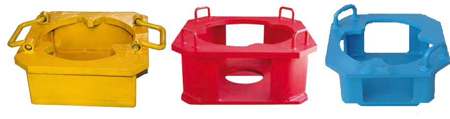